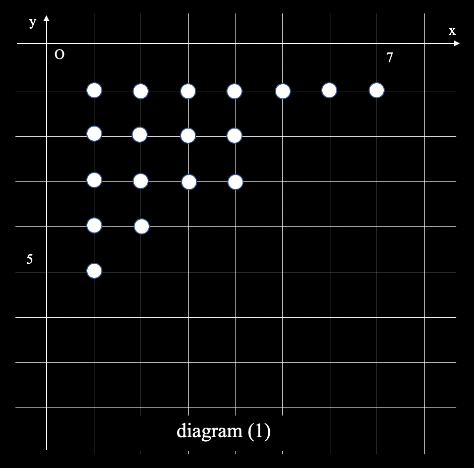
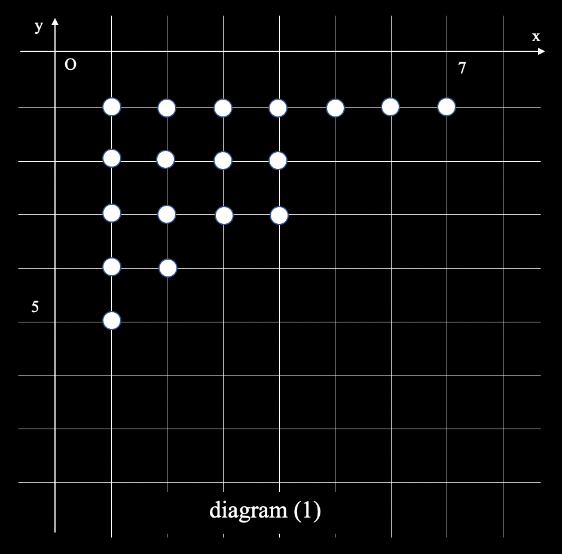

Method
1. The value of the q-binomial coefficient
Here is the well-known equation of binomial coefficients.
\[
\binom{n}{k}=\binom{n-1}{k}+\binom{n-1}{k-1} \ \ \ \ \ ......(1)
\]
The following equation which is similar to (1) is true.
\[
\binom{n}{k}_{q}=q^{k}\binom{n-1}{k}+\binom{n-1}{k-1} \ \ \ \ \ ......(2)
\]
(proof)
\[
{
q^{k}\binom{n-1}{k}+\binom{n-1}{k-1} \\
= q^{k}\frac{[(n-1)]!_{q}}{[k]!_{q}[n-k-1]!_{q}} + \frac{[(n-1)]!_{q}}{[k-1]!_{q}[n-k]!_{q}} \\
= \frac{[(n-1)]!_{q}}{[k]!_{q}[n-k]!_{q}} \left( q^{k}[n-k]_{q}+[k]_{q} \right) \\
= \frac{[(n-1)]!_{q}}{[k]!_{q}[n-k]!_{q}} \left( q^{k}\frac{1-q^{n-k}}{1-q} + \frac{1-q^{k}}{1-q} \right) \\
= \frac{[(n-1)]!_{q}}{[k]!_{q}[n-k]!_{q}} \left( \frac{1-q^{k}+q^{k}-q^{n}}{1-q} \right) \\
= \frac{[(n-1)]!_{q}}{[k]!_{q}[n-k]!_{q}} \left( \frac{1-q^{n}}{1-q} \right) \\
= \frac{[n]_{q}[n-1]!_{q}}{[k]!_{q}[n-k]!_{q}} \\
= \frac{[n]!_{q}}{[k]!_{q}[n-k]!_{q}} \\
= \binom{n}{k}_{q} \ \ \ \ \ \ \ \ \ \ \ \ \ \ \ \ \ \ \ \ \ \ \ \ \ \ ■
}
\]
This calculator calculates the value of the q-binomial coefficient by using the equation (2).
At first, it calculates the value of qi and saves it in powq[i] variable.
Next, it generates the two dimensional array named comq[i][j] and initializes comq[i][0] to 1.
By using the value of powq, it calculates the value of “comq[i-1][j-1]+powq[j]*comq[i-1][j]”, and this value is exactly equal to comq[i][j].
By using the preceding algorithm, it is possible to calculate the value of the q-binomial coefficient with time complexity O(n^2).
2. The polynomial of the q-binomial coefficient
Before the calculation of the polynomial, consider the S(n,k) which is “staircase”. It suffices the following proposition. Let P(i,j) be a element of the S(n,k).
1. S(n,k) is a set which contains lattice points.
2. Both i and j suffice 1<=i<=(n-k) and 1<=j<=k.
3. S(i-1,j) is a element of the S(n,k). (i>=2)
4. The number of elements which suffice j=J is larger than or equal to that of elements which suffice j=J+1.
Let n be 12, and k be 5. The following diagram (1) is the example of the S(n,k).

If we substitute boxes for points, this diagram will be easier to understand(diagram (2)). It exactly seems a “staircase”. This is also called “Young diagram”.
Let C(n,k,i) be the patterns of the S(n,k) which contains i boxes or points. And let Q(n,k,i) be the coefficient of (n k)q which corresponds to the qi. C(n,k,i) is equal to Q(n,k,i). This fact is very important and useful when we calculates the polynomial of the q-binomial coefficient.
Theorem 1. C(n,k,i)=Q(n,k,i)
For the calculation of the q-binomial coefficients, we need to show the following lemma1 and lemma2.
Lemma 1. Q(n,k,i)=Q(n,k,k(n-k)-i)


Lemma 2. Q(n,k,i-1) <= Q(n,k,i) (When i <= k(n-k)/2)
By using these two lemmas, the following Corollary 1 is easily deduced.
Corollary 1. Q(n,k,i) is maximized when i is equal to k(n-k)/2.
We can prove the following theorem by using Corollary 1.
Theorem 2. Q(n,k,i) <= nCk
Using theorem 2, Q(n,k,i) is equal to or less than nCk. That means we can calculate the polynomial of the q-binomial coefficients by using the following steps with time complexity O(n^2).
1. Initialize i to 0. Substitute temp for (n k)_q. Let q be nCk.
2. The coefficient of q^i is temp % q.
3. Substitute temp for temp / q.
4. Finish if temp is equal to zero. Otherwise substitute i for i+1, and back to the step 2.
This is how it calculates the polynomial of the q-binomial coefficients.
We can calculate it in another way. This calculator used theorem 1 when it calculates Q(n,k,i) in an obsoleted method. It counts the number of the staircases which corresponds n, k and i (It is possible to calculates the value of Q(n,k,i) by using the equation (3), but it is more intuitive to correspond the number of the staircases.).
At first, it prepares a three-dimensional array dp[n-k][i][k]. The variable n-k is the number of columns, variable i is the number of blocks, k is the number of columns. Dp[n-k][i][k] is the number of the staircase patterns which contains i blocks, exactly has k columns, exactly contains n-k blocks in the first row. When n-k is equal to 1, dp[i][j’][j’’] is equal to δj’j’’(δj’j’’ is called Kronecker delta). Remark the value of dp[N-K,I,K]. When we add one line to the staircase, the new line must contain N-K blocks and the second line must contain less than or equal to N-K blocks. Therefore, the following eqution holds. \[ { dp[N-K,I,K]=\sum_{k'=0}^{K} \ dp[N-K,I-N+K,K-k’] \ \ ……(4) } \] We can calculate dp[N-K,I,K] with time complexity O(1) by using comulative sum. We can calculate the polynomial of q-binomial coefficient with time complexity O(n^4) which is equal to the number of dp elements(More exactly, we can calculate with time complexity O(k^2(n-k)^2).
By considering the correspondence to the staircase, it is obvious that q-binomial coefficient represents the number of an integer partition. In other words, the coefficient of qi which appears in (n k)q is equal to “the pattern of the paritition which divides i into k integers that are less than or equal to n-k”. This is very important fact that relates Rogers-Ramanujan identities.
1. S(n,k) is a set which contains lattice points.
2. Both i and j suffice 1<=i<=(n-k) and 1<=j<=k.
3. S(i-1,j) is a element of the S(n,k). (i>=2)
4. The number of elements which suffice j=J is larger than or equal to that of elements which suffice j=J+1.
Let n be 12, and k be 5. The following diagram (1) is the example of the S(n,k).

If we substitute boxes for points, this diagram will be easier to understand(diagram (2)). It exactly seems a “staircase”. This is also called “Young diagram”.
Let C(n,k,i) be the patterns of the S(n,k) which contains i boxes or points. And let Q(n,k,i) be the coefficient of (n k)q which corresponds to the qi. C(n,k,i) is equal to Q(n,k,i). This fact is very important and useful when we calculates the polynomial of the q-binomial coefficient.
Theorem 1. C(n,k,i)=Q(n,k,i)
(proof)
When n is equal to 1, let the number of the staircases which contains 0 blocks be 1.
The number of those which contains 1 blocks is 1.
These correspondent to the value of (1 0)q and (1 1)q.
Remark recurrence relations of C(n,k,i) and Q(n,k,i).
It is obvious from (2) that Q(n,k,i) suffices the following equation (3).
\[
{
Q(n,k,i) = \\
\ \ Q(n-1, k, i-k)+Q(n-1, k-1, i) \ \ \ (i>=k) \ \ \ ……(3) \\
\ \ Q(n-1,k-1,i)\ \ \ (i < k) \ \ \ \ \ \ \
}
\]
Following considerations about C(n,k,i) are true.
1. Staircases can be classified into two groups according to whether they contain (1,k) or not.
2. The number of the staircases which contain (1,k) is equal to the number of those which delete one column and reduce k blocks.
3. The number of the those which doesn’t contain (1,k) is equal to the number of those which delete one row.
The following equation holds because of considerations 2 and 3.
\[ { C(n,k,i)= \\ \ \ C(n-1,k,i-k)+C(n-1,k-1,i)\ \ \ (i>=k) \\ \ \ C(n-1,k-1,i)\ \ \ (i < k) } \] Q(n,k,i) and C(n,k,i) suffice the same reccurence relation. Therefore, Q(n,k,i) is equal to C(n,k,i). ■
1. Staircases can be classified into two groups according to whether they contain (1,k) or not.
2. The number of the staircases which contain (1,k) is equal to the number of those which delete one column and reduce k blocks.
3. The number of the those which doesn’t contain (1,k) is equal to the number of those which delete one row.
The following equation holds because of considerations 2 and 3.
\[ { C(n,k,i)= \\ \ \ C(n-1,k,i-k)+C(n-1,k-1,i)\ \ \ (i>=k) \\ \ \ C(n-1,k-1,i)\ \ \ (i < k) } \] Q(n,k,i) and C(n,k,i) suffice the same reccurence relation. Therefore, Q(n,k,i) is equal to C(n,k,i). ■
For the calculation of the q-binomial coefficients, we need to show the following lemma1 and lemma2.
Lemma 1. Q(n,k,i)=Q(n,k,k(n-k)-i)
(proof)
Think of the “reversal “of the deviation of i.
To reverse the deviation, remove all tiles, put tiles in the all position which no tile have put in (diagram(2) to diagram(3)).
Then rotate the whole diagram 180 degrees (diagram(3) to diagram(4)).
Let i be the number of tiles which was contained in the previous diagram.
New diagram which is created by the preceding process contains k(n-k)-i tiles.
By using these steps, the bijection from the deviation which contains i tiles to that which contains k(n-k)-i tiles was materialized.
Therefore C(n,k,i) is equal to C(n,k,k(n-k)-i). By using theorem 1, Q(n,k,i) is equal to Q(n,k,k(n-k)-i). ■
Lemma 2. Q(n,k,i-1) <= Q(n,k,i) (When i <= k(n-k)/2)
(proof)
Use the mathematical induction. When it holds when n=N-1 and k=K-1, the following equations are true.
\[ { Q(N,K, \tfrac{K(N-K)}{2}-1)=Q(N-1,K-1, \tfrac{K(N-K)}{2}-1)+Q(N-1,K,\tfrac{K(N-K-2)}{2}-1) \\ Q(N,K,\tfrac{K(N-K)}{2})=Q(N-1,K-1,\tfrac{K(N-K)}{2})+Q(N-1,K,\tfrac{K(N-K-2)}{2}) } \] If we use Lemma1 adequately, we can apply Lemma2 to each terms of the right side. It is clear that Lemma2 holds when k=0 or i=-1. Therefore Lemma2 holds for all n,k and i. ■
\[ { Q(N,K, \tfrac{K(N-K)}{2}-1)=Q(N-1,K-1, \tfrac{K(N-K)}{2}-1)+Q(N-1,K,\tfrac{K(N-K-2)}{2}-1) \\ Q(N,K,\tfrac{K(N-K)}{2})=Q(N-1,K-1,\tfrac{K(N-K)}{2})+Q(N-1,K,\tfrac{K(N-K-2)}{2}) } \] If we use Lemma1 adequately, we can apply Lemma2 to each terms of the right side. It is clear that Lemma2 holds when k=0 or i=-1. Therefore Lemma2 holds for all n,k and i. ■
By using these two lemmas, the following Corollary 1 is easily deduced.
Corollary 1. Q(n,k,i) is maximized when i is equal to k(n-k)/2.
We can prove the following theorem by using Corollary 1.
Theorem 2. Q(n,k,i) <= nCk
(proof)
From Corollary1, this theorem can be proved if we prove it when i is equal to k(n-k)/2.
Use the matimatical induction. Let it hold when n=N-1 and k=K-1, K.
\[ { Q(N,K,\tfrac{K(N-K}{2})=Q(N-1,K-1,\tfrac{K(N-K)}{2})+Q(N-1,K,\tfrac{K(N-K-2)}{2}) \\ < Q(N-1,K-1,\tfrac{(K-1)(N-K)}{2})+Q(N-1,K,\tfrac{K(N-K-1)}{2}) \\ < \binom{N-1}{K-1}+\binom{N-1}{K} \\ =\binom{N}{K} } \] When k = 0, it cleary holds because Q(n,0,i) = 1 = nC0. It also holds when i=0 because Q(n,k,0)=1 =< nCk. Therefore Theorem 2 holds for all n,k and i.
\[ { Q(N,K,\tfrac{K(N-K}{2})=Q(N-1,K-1,\tfrac{K(N-K)}{2})+Q(N-1,K,\tfrac{K(N-K-2)}{2}) \\ < Q(N-1,K-1,\tfrac{(K-1)(N-K)}{2})+Q(N-1,K,\tfrac{K(N-K-1)}{2}) \\ < \binom{N-1}{K-1}+\binom{N-1}{K} \\ =\binom{N}{K} } \] When k = 0, it cleary holds because Q(n,0,i) = 1 = nC0. It also holds when i=0 because Q(n,k,0)=1 =< nCk. Therefore Theorem 2 holds for all n,k and i.
Using theorem 2, Q(n,k,i) is equal to or less than nCk. That means we can calculate the polynomial of the q-binomial coefficients by using the following steps with time complexity O(n^2).
1. Initialize i to 0. Substitute temp for (n k)_q. Let q be nCk.
2. The coefficient of q^i is temp % q.
3. Substitute temp for temp / q.
4. Finish if temp is equal to zero. Otherwise substitute i for i+1, and back to the step 2.
This is how it calculates the polynomial of the q-binomial coefficients.
We can calculate it in another way. This calculator used theorem 1 when it calculates Q(n,k,i) in an obsoleted method. It counts the number of the staircases which corresponds n, k and i (It is possible to calculates the value of Q(n,k,i) by using the equation (3), but it is more intuitive to correspond the number of the staircases.).
At first, it prepares a three-dimensional array dp[n-k][i][k]. The variable n-k is the number of columns, variable i is the number of blocks, k is the number of columns. Dp[n-k][i][k] is the number of the staircase patterns which contains i blocks, exactly has k columns, exactly contains n-k blocks in the first row. When n-k is equal to 1, dp[i][j’][j’’] is equal to δj’j’’(δj’j’’ is called Kronecker delta). Remark the value of dp[N-K,I,K]. When we add one line to the staircase, the new line must contain N-K blocks and the second line must contain less than or equal to N-K blocks. Therefore, the following eqution holds. \[ { dp[N-K,I,K]=\sum_{k'=0}^{K} \ dp[N-K,I-N+K,K-k’] \ \ ……(4) } \] We can calculate dp[N-K,I,K] with time complexity O(1) by using comulative sum. We can calculate the polynomial of q-binomial coefficient with time complexity O(n^4) which is equal to the number of dp elements(More exactly, we can calculate with time complexity O(k^2(n-k)^2).
By considering the correspondence to the staircase, it is obvious that q-binomial coefficient represents the number of an integer partition. In other words, the coefficient of qi which appears in (n k)q is equal to “the pattern of the paritition which divides i into k integers that are less than or equal to n-k”. This is very important fact that relates Rogers-Ramanujan identities.